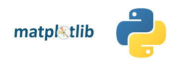
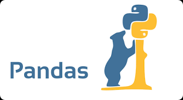
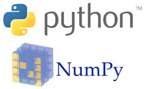
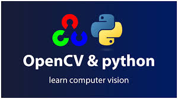

¿Qué beneficios ofrece Python?
Los beneficios de Python incluyen los siguientes:
- Los desarrolladores pueden leer y comprender fácilmente los programas de Python debido a su sintaxis básica similar a la del inglés.
- Python permite que los desarrolladores sean más productivos, ya que pueden escribir un programa de Python con menos líneas de código en comparación con muchos otros lenguajes.
- Python cuenta con una gran biblioteca estándar que contiene códigos reutilizables para casi cualquier tarea. De esta manera, los desarrolladores no tienen que escribir el código desde cero.
- Los desarrolladores pueden utilizar Python fácilmente con otros lenguajes de programación conocidos, como Java, C y C++.
- La comunidad activa de Python incluye millones de desarrolladores alrededor del mundo que prestan su apoyo. Si se presenta un problema, puede obtener soporte rápido de la comunidad.
- Hay muchos recursos útiles disponibles en Internet si desea aprender Python. Por ejemplo, puede encontrar con facilidad videos, tutoriales, documentación y guías para desarrolladores.
- Python se puede trasladar a través de diferentes sistemas operativos de computadora, como Windows, macOS, Linux y Unix.
¿Cómo se utiliza Python?
Python se utiliza en una amplia variedad de campos debido a su sintaxis legible y su versatilidad, incluyendo el desarrollo web (backend), la automatización de tareas, el análisis de datos, el aprendizaje automático, el desarrollo de software y la automatización de pruebas. Es un lenguaje interpretado conocido por su simplicidad y facilidad de aprendizaje, lo que lo convierte en una opción popular para principiantes y para proyectos complejos
| Python es útil para escribir código del lado del servidor debido a que ofrece muchas bibliotecas que constan de código preescrito para crear funciones de backend complejas. Los desarrolladores también utilizan un amplio rango de marcos de Python que proporcionan todas las herramientas necesarias para crear aplicaciones web con mayor rapidez y facilidad. Por ejemplo, los desarrolladores pueden crear la aplicación web esqueleto en segundos porque no deben escribirla desde cero. Pueden probarla por medio de las herramientas de prueba del marco, sin depender de herramientas de prueba externas. |
¿Cuáles son las características de Python?
Las características siguientes del lenguaje de programación Python lo hacen único:
- Un lenguaje orientado a los objetos Python considera todo como un objeto, pero también admite otros tipos de programación, como la programación estructurada y la funcional.
- Un lenguaje de alto nivel Python es más cercano a los idiomas humanos que otros lenguajes de programación. Por lo tanto, los programadores no deben preocuparse sobre sus funcionalidades subyacentes, como la arquitectura y la administración de la memoria.
- Un lenguaje tipeado dinámicamente Los programadores no tienen que anunciar tipos de variables cuando escriben código porque Python los determina en el tiempo de ejecución. Debido a esto, es posible escribir programas de Python con mayor rapidez.
- Un lenguaje fácil de utilizar Python utiliza palabras similares a las del inglés. A diferencia de otros lenguajes de programación, Python no utiliza llaves. En su lugar, utiliza sangría.
- Un lenguaje interpretado Python es un lenguaje interpretado, lo que significa que ejecuta directamente el código línea por línea. Si existen errores en el código del programa, su ejecución se detiene. Así, los programadores pueden encontrar errores en el código con rapidez.
¿Qué son las bibliotecas de Python?
Una biblioteca es una colección de códigos usados con frecuencia que los desarrolladores pueden incluir en sus programas de Python para evitar tener que escribir el código desde cero. De forma predeterminada, Python incluye la biblioteca estándar, que contiene una gran cantidad de funciones reutilizables. Además, más de 137 000 bibliotecas de Python están disponibles para diversas aplicaciones, incluidos el desarrollo web, la ciencia de datos y el machine learning (ML).
Estas son algunas de las bibliotecas mas poplares de Python
Matplotlib
Los desarrolladores utilizan Matplotlib para trazar los datos en gráficos de dos y tres dimensiones (2D y 3D) de alta calidad. Por lo general, se utiliza en las aplicaciones científicas. Con Matplotlib, puede visualizar los datos mostrándolos en diferentes gráficos, como los gráficos de barras y los de líneas. También puede trazar varios gráficos de una sola vez, y estos se pueden trasladar a todas las plataformas.
Pandas
Pandas proporciona estructuras de datos optimizadas y flexibles que se pueden utilizar para manipular datos de serie temporal y datos estructurados, como las tablas y las matrices. Por ejemplo, puede utilizar Pandas para leer, escribir, combinar, filtrar y agrupar datos. Muchas personas lo utilizan para las tareas de ciencia de datos, análisis de datos y ML.
NumPy
NumPy es una conocida biblioteca que utilizan los desarrolladores para crear y administrar matrices, manipular formas lógicas y efectuar operaciones de álgebra lineal con facilidad. NumPy admite la integración a muchos lenguajes, como C y C++.
Requests
La biblioteca Requests proporciona funciones útiles que se necesitan para el desarrollo web. Puede usarla para enviar solicitudes HTTP; agregar encabezados, parámetros de URL y datos; y llevar a cabo muchas más tareas cuando se comunica con aplicaciones web
OpenCV-Python
OpenCV-Python es una biblioteca que los desarrolladores utilizan para procesar imágenes para las aplicaciones de visión artificial. Proporciona muchas funciones para las tareas de procesamiento de imágenes, como la lectura y la escritura simultáneas de imágenes, la creación de un entorno 3D a partir de uno 2D y la captura y el análisis de las imágenes de video.
Keras

Keras es la biblioteca de red neuronal profunda de Python que cuenta con un excelente soporte para el procesamiento de datos, su visualización y mucho más. Keras admite muchas redes neuronales. Posee una estructura modular que ofrece flexibilidad en la escritura de aplicaciones innovadoras.